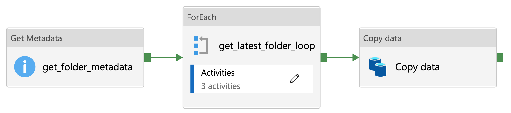

Azure Data Factory Utilities¶
Open access and reusable design documentation of utilities used in the NHSX Analytics Unit Azure Data Factory (ADF) environment.
Latest Folder Lookup¶
Metadata¶
# -------------------------------------------------------------------------
# Copyright (c) 2021 NHS England and NHS Improvement. All rights reserved.
# Licensed under the MIT License. See license.txt in the project root for
# license information.
# -------------------------------------------------------------------------
"""
FILE: latestFolder.json
DESCRIPTION:
The latest folder lookup ADF utility allows you to find the
most recent folder from a directory of time-stamped folders.
CONTRIBUTORS: Craig Shenton, Mattia Ficarelli
CONTACT: data@nhsx.nhs.uk
CREATED: 19 Sept 2021
VERSION: 0.0.1
"""
The latest folder lookup ADF utility allows you to find the most recent folder from a directory of time-stamped folders. This utility was developed from a method to get the latest added file in a folder, the source of which can be found here.
The Azure Data Factory json configuration file is available below.
Problem¶
Data is saved in directory of time stamped folders, as shown below.
root/
├── directory/
│ ├── 2021-06-01/
│ ├── 2021-06-02/
│ ├── 2021-06-03/
│ └── 2021-06-04/
How to select the latest folder in an ADF pipeline based on the name of the folder (rather than the latest modified)?
Pipeline setup¶
Here we develop a template solution in Azure Data Factory that will compare the names of time-stamped folders to find the folder with the latest date. The Azure Data Factory json configuration file is available below.
{kind=link}
Figure 1: Overview of the latest folder lookup ADF utility
Step 1. Create two pipeline variables: latestFolder and prevFolder (see Figure 2).
The
latestFoldervariable is an empty string to save the latest folder name.The
prevFoldervariable is set to a historical date before you started collecting data for example, ‘1970-01-01’
{kind=link}
Figure 2: Adding pipeline variables
Step 2. Create a ‘folder_metadata’ dataset with the path set to the root directory of the time-stamped folder for example, root/directory/ (see Figure 3).

Figure 3: Creating a folder_metadata dataset
Step 3. Create a GetMetadata activity.
Note
More information on the GetMetadata ADF activity can be found in the Microsoft documentation.
Link the ‘folder_metadata’ dataset to the GetMetadata activity under the dataset tab.
Add a ‘Field List’ argument as
Child Items, this will list each subfolder in the ‘folder metadata’ dataset (see Figure 4).
{kind=link}
Figure 4: Creating a GetMetadata activity
Loop setup¶
Step 4. Create a ‘ForEach’ activity.
Note
More information on the ForEach ADF activity can be found in the Microsoft documentation.
In the ForEach activity settings, set ‘items’ as
@activity('get_folder_metadata').output.childItems(see Figure 5).
{kind=link}
Figure 5: Creating a ForEach activity
Step 5. Within the ‘ForEach’ activity create a second get GetMetadata activity (see Figure 6).
Create a ‘date metadata’ dataset with the path set to:
@concat('root/directory/',dataset().latestDate)Set the target dataset to ‘date_metadata’ and add a parameter to the dataset called
latestDateIn the second GetMetadata activity set the parameter
latestDateto@item().name
{kind=link}
Figure 6: Creating a second GetMetadata activity, within the previously created ForEach activity
Conditional setup¶
Step 6. Create a ‘If Conditional’ activity.
Note
More information on the If Conditional ADF activity can be found in the Microsoft documentation.
Step 7. Set the expression in the If Conditional activity (added as dynamic content) as:
@greater(formatDateTime(activity('get_folder_metadata_2').output.itemName,'yyyyMMdd'),formatDateTime(variables('prevFolder'),'yyyyMMdd'))
This will check if the name of each folder (formatted as a date) is greater (i.e., the latest) than the previous folder in the loop, starting with the default value - ‘1970-01-01’ (see Figure 7).
{kind=link}
Figure 7: Setting an expression within an If Conditional activity
Step 8. In the ‘If Conditional’ activity where Case = True (i.e., if the folder name is greater than the previous folder name) create a new Set Variable activity.
Note
More information on the Set Variable ADF activity can be found in the Microsoft documentation.
Within the Set Variable activity set
Name = latestFolderandValue = @activity('get_folder_metadata_2').output.itemName(see Figure 8).
{kind=link}
Figure 8: Creating a Set Variable activity where latest folder = true
Step 9. Go back to the loop and add another Set Variable activity after the If Conditional activity.
Set
Name = prevFolderandValue = @activity('get_folder_metadata_2').output.itemName(see Figure 10).
This will update the prevFolder value to the next folder in the set after each loop.

Figure 9: Creating a Set Variable activity for the previous folder
Copy Data setup¶
Step 10. Create a ‘latest_folder_source’ dataset.
Set the path to
@concat('root/directory/', dataset().folderName, '/').
Step 11. Add a parameter to ‘latest_folder_source’ dataset called folderName.
Set the parameter folderName to
@variable('latestFolder').
Step 12. Create a ‘Copy Data’ activity.
Note
More information on the Copy Data ADF activity can be found in the Microsoft documentation.
Set the ‘latest_folder_source’ dataset as the source and an appropriate dataset as sink where you want to save the latest data (see Figure 10).

Figure 10: Creation of a Copy Data activity with the ‘latest_folder_source’ dataset set as the source
Data Factory Configuration¶
Download the Azure Data Factory json configuration file to use this template in your own data pipelines.